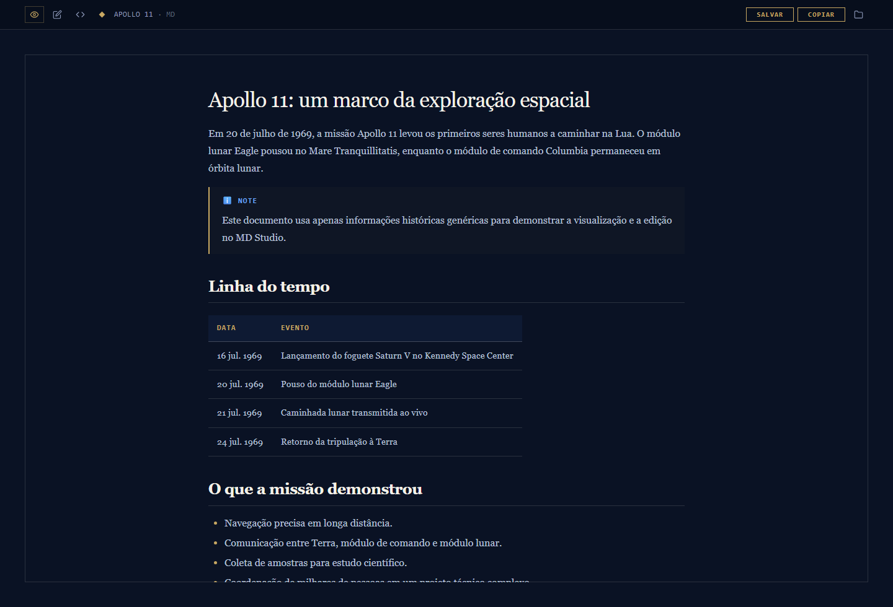
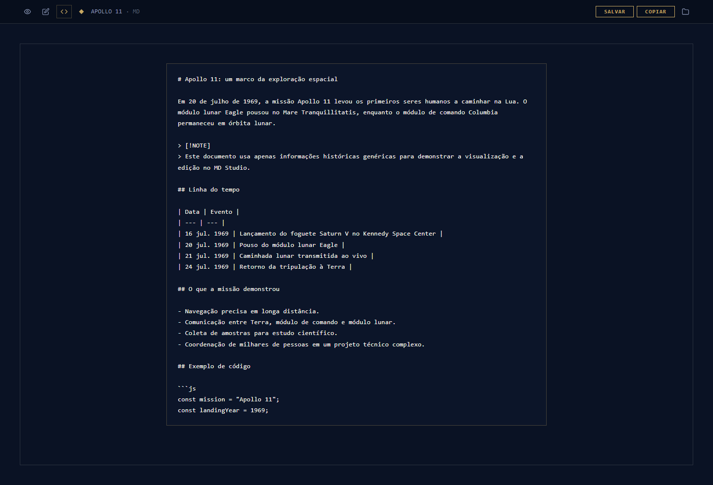

Leia com
o texto em foco.
Títulos, listas, tabelas e destaques ganham forma. Percorra o conteúdo sem precisar interpretar a marcação.
PARA LER E CONFERIRLEITURA · EDIÇÃO · MARKDOWN
Leia, revise e edite seus documentos em uma interface que dá espaço ao conteúdo. Um único arquivo HTML: abra no navegador e comece.
Explore o projeto. Se for útil, deixe uma estrela no GitHub.
Uma boa leitura começa quando a estrutura ajuda o conteúdo a aparecer.
Leia o resultado. Ajuste o texto.
Volte à fonte quando precisar.
Composição ilustrativa · veja as capturas reais abaixo
Arquivo HTMLAs bibliotecas já vêm embutidas.
Modos de trabalhoLeitura, edição visual e fonte.
Depois de baixarAbra no seu navegador, sem conta.
01 / ESCOLHA COMO TRABALHAR
Da leitura à revisão, mude de perspectiva sem trocar de ferramenta.
Títulos, listas, tabelas e destaques ganham forma. Percorra o conteúdo sem precisar interpretar a marcação.
PARA LER E CONFERIREdite diretamente no documento renderizado. Revise uma frase, complemente um parágrafo e salve o resultado em Markdown.
PARA REVISAR A REDAÇÃO Ctrl+ETrabalhe na sintaxe Markdown quando quiser ajustar listas, tabelas, blocos de código ou a organização do arquivo.
PARA EDITAR A MARCAÇÃO Ctrl+U02 / DENTRO DO MD STUDIO
Compare o mesmo documento nos modos Preview e Código-fonte. As imagens abaixo são capturas reais do aplicativo.


Preview: uma leitura organizada, com hierarquia, tabelas e destaques.
Ampliar captura ↗Quer experimentar com um documento seu?
O aplicativo completo está no repositório.
03 / CONTEÚDO COM ESTRUTURA
Organize comparações, etapas e checklists em uma leitura estruturada.
Notas e alertas no estilo GitHub ajudam a destacar o que merece atenção.
Destaque de sintaxe e botão de copiar para trechos técnicos.
Represente relações e sequências a partir do diagrama escrito no arquivo.
Fórmulas renderizadas com KaTeX para acompanhar a explicação.
Salve ou copie o Markdown para seguir trabalhando onde preferir.
04 / NO SEU DIA A DIA
Leia um material longo com títulos, tabelas e destaques bem definidos.
Organize ideias, acompanhe pendências e ajuste a redação no documento.
Trabalhe com READMEs, guias ou conteúdo em Markdown produzido no seu assistente.
05 / ABRA E COMECE
Para usar o aplicativo, você precisa do arquivo HTML e de um navegador. Não é necessário instalar Node.js nem dependências.
No GitHub, abra Code → Download ZIP e extraia o conteúdo em uma pasta do seu computador.
Abrir o repositório ↗Dê dois cliques em md-studio.html para abrir no navegador. As bibliotecas necessárias já estão no arquivo.
Arraste um arquivo para a tela ou clique em ABRIR ARQUIVO. Alterne os modos e salve suas alterações.
.md · .markdown · .mdown · .mkd · .txtAo salvar: em navegadores compatíveis, o aplicativo pode gravar no arquivo com sua permissão. Nos demais, ele baixa uma cópia. Confira o arquivo salvo antes de fechar.
Para usar offline: o aplicativo e suas bibliotecas não dependem de CDN. Imagens ou outros recursos externos referenciados no documento podem precisar de internet.
Ctrl+O Abrir
Ctrl+E Edição visual
Ctrl+U Código-fonte
Ctrl+S Salvar
DOIS JEITOS DE DAR O PRIMEIRO PASSO
Baixe este exemplo curto e abra no MD Studio. Ele contém títulos, tabela, checklist e um trecho de código para explorar a leitura.
# Notas de pesquisa Um documento de exemplo para explorar o MD Studio. ## Plano de leitura | Etapa | Objetivo | | --- | --- | | Ler | Identificar a ideia central | | Revisar | Ajustar a redação | | Salvar | Manter uma versão em Markdown | > [!NOTE] > Este exemplo não contém dados de clientes ou processos. ## Checklist - [x] Abrir o arquivo no modo Preview - [ ] Editar uma frase no modo visual - [ ] Conferir o código-fonte - [ ] Salvar o resultado ## Um trecho de código ```js const documento = "notas-de-pesquisa.md"; console.log(documento); ```
Cole as instruções em um agente com acesso ao seu computador. Ele pode baixar o aplicativo, preparar um exemplo e conferir a abertura no navegador.
Quero usar o MD Studio no meu computador. Prepare o aplicativo e me ajude a fazer a primeira leitura e edição de um documento. Repositório oficial: https://github.com/brunoflma/md-studio Guia: https://brunoflma.github.io/md-studio/#comecar 1. Confira meu sistema operacional, o navegador disponível e se já existe uma cópia do MD Studio. Preserve arquivos e alterações existentes. Se faltar uma preferência importante, pergunte apenas o necessário. 2. Leia o README atual do repositório e confira a versão que vai obter. Baixe md-studio.html do repositório oficial ou baixe e extraia o ZIP do projeto em uma pasta apropriada. Não substitua outra cópia modificada sem minha autorização. 3. O aplicativo é um HTML com bibliotecas embutidas. Para o uso normal, não execute npm install, não instale um servidor e não crie recursos na nuvem. As ferramentas em .app são auxiliares de desenvolvimento. 4. Abra md-studio.html no navegador. Crie uma cópia de um exemplo curto de Markdown sem dados pessoais, com título, parágrafo, tabela e checklist. Abra esse arquivo pelo botão ABRIR ARQUIVO ou por arrastar e soltar. 5. Confira os modos Preview, Edição visual e Código-fonte. Faça uma alteração pequena somente na cópia do exemplo, salve e abra o resultado para verificar se a mudança foi preservada. Respeite os diálogos de permissão do navegador. Se o salvamento gerar um download, identifique a nova cópia antes de reabri-la. 6. Explique como abrir meus próprios documentos, alternar os modos e salvar. Informe onde estão o aplicativo e o exemplo. O aplicativo funciona offline; imagens e recursos externos do documento podem precisar de internet. 7. Não envie documentos meus a serviços externos e não altere a segurança do navegador. Se não puder baixar, abrir ou testar por falta de ferramentas ou permissões, explique exatamente o que ficou pendente e me conduza pela etapa. Não afirme ter executado uma ação que não realizou. Ao terminar, liste apenas os passos concluídos, a evidência de que o exemplo abriu e foi salvo e qualquer ação que ainda dependa de mim. Deixe a avaliação e a estrela no GitHub para minha decisão.
ANTES DE ABRIR O PRIMEIRO ARQUIVO
Para usar, baixe o projeto, extraia e abra md-studio.html no navegador. O aplicativo não exige instalação de dependências, conta ou servidor local.
Esta página apresenta o projeto e mostra capturas do aplicativo. Para abrir e editar seus documentos, baixe o MD Studio no GitHub e abra o HTML no seu computador.
Sim. As bibliotecas do aplicativo estão embutidas no HTML. Recursos que o próprio documento aponta para outros sites, como imagens remotas, continuam dependendo de conexão.
Use SALVAR ou Ctrl+S. Quando a File System Access API está disponível, o navegador pode permitir gravar no arquivo. Nos demais casos, o aplicativo baixa uma cópia. Não conte com salvamento automático: confira a versão salva antes de fechar.
A edição visual converte o conteúdo renderizado de volta para Markdown; a representação pode mudar. Para preservar ou ajustar uma sintaxe específica, especialmente em estruturas complexas, use o modo Código-fonte e confira o arquivo salvo.
Sim. Salve o conteúdo em um arquivo Markdown e abra no MD Studio para ler e revisar. O aplicativo é um visualizador e editor: ele não gera texto nem consulta modelos de IA.
SEU TEXTO MERECE ESSA ATENÇÃO
Baixe, abra um documento e avalie a experiência. Se o projeto for útil, clique em Star no GitHub para salvá-lo e apoiar seu desenvolvimento.